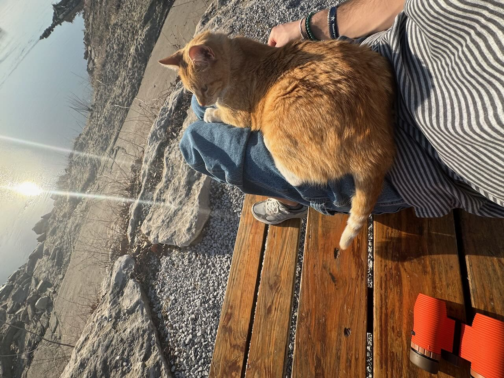

this also sort of doubles as a inadvertent and long-winded review of “The Brothers Karamazov”, by Fyodor Dostoevsky, as much of these thoughts were generated during my readings of it in the last few weeks… but is not a direct review of the work at all, just noting!
preface
I have written about four essays thus far. at least four that are interesting/complete enough to restart a blog with a dedicated focus. expression and capturing my voice and thoughts thru time. I began this entire process as sort of just journaling? and realized it is kinda fun to write to an audience (even hypothetical). and I will just send this to my mom. mom, if you are my only reader, then I thank you for birthing me and allowing me to write.
I am essentially cosplaying as a philosophy major trying to grasp at life or something, or I am just bored out of my wits in my final semester and procrastinating school work, or I am sowing the seeds for a legendary writing career… perhaps all and none of this is true. I will again say that I write for me, but to make a mark and maybe inspire some stranger across the world to think about something if you come across this on the internet. that is the point of writing for an audience, no? I am going to try to keep my voice and humor here where I can, and I do not take myself so seriously. i have not checked for grammer* or spelling and have retained all abnormal conventions because i can! I am in no way entitled to intelligently write on any of these matters and they are merely me trying to dump and sculpt my brains goo into a piece I can make sense of. tasks like this are experiments for myself and maybe can become a creative little hobby if I keep at it. I am excited to read this in a few months and pick it apart and see what sticks or what was merely a reflection of today! alas,
my main four were from december 2024, march, may, and june of 2025. namely, in the one in june, I wrote about “regenerating my convictions” which I stole from The Brothers Karamazov. this quote resonated with me as I was really trying to take a step back and think about myself in great detail (more than I already do), and ironically, now that I have finished the novel, a big takeaway from Ivan, who said that in the book, is that his contradiction drove him to complete madness. his heart and mind were at odds because of him holding his worldview so tightly. I now resonate with the lesson that prevailed. the initial quote is what I needed to hear at the time, but in retrospect I was definitely trying way too hard to understand my own beliefs or thoughts. I think maybe the true way to understand this is actually to not try and force it, as that is more of the mindset I have been in lately.
alas, some of my writings have read more like “creative non-fiction”, which I didn’t really understand until I came across a youtube video a week or so ago about it. I presumed it meant something along the lines of picking a specific “objective” topic and finding a more detailed or literary way to explore the topic, but then I realized that journal entries geared toward an audience are essentially anecdotal essays on real life, i.e. non-fiction, and qualify. I suppose many of the great writers of millennia have published essays like this, and as for the philosophical fiction type books I have read (nausea, the stranger, the fall, brothers), I see that many of the topics are truly based in personal experience, and the story/characters are sort of a projection or tone filter on the concepts. and of course even sci-fi or absurdist fiction employs the same techniques. I quite enjoy these types of writing, and I fully intend to write something of my own like that some day, but for now, I will keep on writing whatever these are, I suppose you could call them personalish essays.
for more clarification, I very much have notes or writing that are truly just self-expression, which are more just “journal” entries. not much anything worth reading, or maybe it is…? do people publish their journals? I don’t exactly know… isn’t that just a blog? sort of… as I have made note of before, I do write differently when there is a perceived audience, or if I was trying to make sense of my thoughts to share with my family, but this medium I am exploring takes some unspoken form I suppose. the entire point of this preface is that I am trying to lean into expressionism, and I find that I feel quite best when I write. I should have known, as a small child even before proper schooling, I enjoyed writing fiction (and reading!), and as I was a little older, accounting for my experiences in great detail. my teachers did note that I had decent writing, but they probably told that to every kid.
I have sort of unearthed now that I did some of this out of fear of forgetting. and as I have also unearthed, my fears (and actions surrounding them) are some of the main motivators for all of my actions in my life thus far. it dawned on me when I was twelve years old that I (should) have much more life to live, and there are only so many memories that can be had. this sort of broke my brain, as I quickly became afraid of both forgetting my memories and overwhelmed that I have so many more to create/live. seventy more years of living sounded like a wicked feat, yet here I am ten years later and I still sort of feel the same. I recall this to note that starting around then, I began to really value things that help me recall my life and past thus far. in the last decade this has taken the form of holding onto / logging: physical and digital writing, photos, youtube videos, messages, items, Minecraft worlds, pieces of clothing, pieces of trash, and much more. I think I even do this with places and experiences, because of how much I see myself and my own memories thru them. god I miss the house I grew up in. I must embrace change! but I hate change! same thing with childhood best friends (I hope you are doing good Ethan ),: ). I have a journal entry from two years ago where I wrote everything I miss, and there are so many mundane things like the way a car ride in 2017 made me feel, or the taste of sand on the beach in 2007, or even the pencil I used in the sixth grade. existing is EXHAUSTING!
being twenty-two in the year 2025 means I only have about seventeen years of memory in my little noggin. this makes me think, does my brain hold onto the past memories more or less as I create new ones? is this perhaps why adolescence and young adulthood seem so profound? as well as why time seems to pass so slow in our youth? everything is so fresh and the first schemas and neural pathways of many feelings that are to repeat are felt for the first time. will my memories thus far slowly fade in intensity and breadth as time marches on and I have many more years to recall. I think vsauce said once that every time you recall a memory, it loses some of its detail… this horrifies me. I used to be able to (and still can) recall exact months/dates/times that something happened in my personal timeline. it has gotten hazier as I have lived more life, and this sort of scares me, because like I said, I am afraid of forgetting! this also begs the question, maybe we aren’t meant to log and remember everything. some things are maybe best to be lost to time, or forgotten. initially upon thinking this, I disagreed. but perhaps this is what allows us to get out of our own heads and keep living.
all of this to say, I need to challenge my fears! but at the same time I am motivated to captivate how I feel at different times as to see how I progress or how I thought about things, or how what I was thinking about changes in time. prior to writing or photos or videos, humans just told stories thru word of mouth, or art, but still did many things to keep ledgers or logs of what has happened as society/technology allowed it. now I sit on a laptop in a café and pour my mind out. perhaps writing is the ultimate form of personal expressionism and locks memories or thoughts in time. for this, I will write! and like I said above, maybe some of this will truly be worth reading in a more composed novel or collection of essays someday. I am trying to find my “writers voice”, i.e., prose, or maybe I already have it? a blank doc is a canvas now and there are no bounds for this medium. so I write! now let me begin the contents of this essay, which sort of have a theme, see the title::
note: when I say “scrupulosity”, or “scruple”, I am referring to the historical term for OCD
and begin…
I am no writer or literary nerd, but I sort of wish I had studied something within the discipline of humanities during my time in college. I realize now shortly before graduating that I have (and always have had) a real thirst/knack for psychology/sociology, philosophy, history, and literature/writing. while IT and computers are one interest of mine, I do not question or love them like I do the mentioned topics. I love asking a question and researching, digging deep into why, almost too much so at times. this is harder to do with engineering disciplines, but of course is still applicable. i never even considered doing a degree that wasn’t engineering during high school mainly because I was told that it wont make money or the job prospects are poor. I just believed this at the time and it is not true. also, that completely omits the possibility that dealing with my computers my entire life could be monotonous and soul-crushing. perhaps I am just skeptical, but I am noting that in a different timeline I pursued one of those disciplines instead, and perhaps could be more satisfied or have fueled the part of me that loves that stuff. (or I could be skeptical the same!) but of course I can choose what my career or life or interests look like (i.e., me writing right now!), and I cannot complain about being very fortunate to graduate with a degree with no debt (thank you mom/dad and scholarships). with an infinite bankroll and infinite time, I know I would have loved pursuing something else. but not this timeline!
sort of related to this topic, I feel like nobody reads anymore (this is not a hot take)!! sure the access to total information on the internet is at an all time high, but paradoxically lots of people do not pick up books anymore. and I am absolutely guilty. to my understanding, americans at least read 50% less than they used to in the last couple decades. I think back in the day maybe people used to be more well read generally. just a note and I am going to try and do my part by reading more. but everyone has their own choices, and I don’t blame anyone for not reading, I love articles and youtube. or music. lots of music consumption… I don’t exactly know what the societal effect is of people not reading books anymore but it probably doesn’t matter. it isn’t the 1900s anymore but there is something timeless about a good book. I don’t exactly know my point here. it is also another way to collect things and enjoy physical media, and I of course like that.
in grade school, probably age 7, one of the librarians, I believe mrs. kirkpatrick endowed a concept in my mind… this concept was metacognition, and I remember being quite fond of the idea for much of my youth when I would ruminate on things. the entire condition of much of my internal monologue is this. of course I thought about my thinking prior to having a definition for it, but I torment myself over it now. is naming this helpful or harmful? probably both.
the more I think about my thinking, the more my own bias comes into play, and I run the risk of over-intellectualizing everything. this is a slippery slope and can quickly become a waste of brain power. I need to learn how to do this less. I can type and talk all day and be saying nothing of substance at all. so, then, less is more? probably? but also probably not. I cannot deny the passion that I have for topics, and how much I love talking or writing about them, I believe it is a neat quality that I possess. but I ought to just stop thinking or doing sometimes.
I believe now, as I mentioned in the preface, that I should not hold my own convictions so tightly. I have more of a personal reason, i.e. mental illness and my morbid scrupulosity, to be telling myself this truth, yet I find it to maybe be a kind universal truth. if most humans like most humans + connection, then holding convictions or biases/beliefs less closely probably has the net effect of bringing us all together? but I have no idea what “most” humans want pertaining to socializing with other humans.
this sort of raises the question of morality being purely relative. also, nothing new, but quite interesting to think about. of course, in nature, nothing can be evil. everything just strives to survive and keep existing. one moral framework provided by one family or country or religion is often not synonymous with the others. it truly is all relative, yet we agree on some common truths, but they still are approximations at best…? maybe? things are only right or wrong because we agree/say they are? I think some peoples true desires or evil impulses or thoughts are often silenced by morality imposed on generations of people. or perhaps this effects men more because many of them just stuff it all down, all emotions. at least a lot of people are just… normal? and i am thankful for this, because so many people in history probably committed heinous acts with no repercussions. this is grim, but back to the point, there is quite a value in holding contradiction, and multiple opposing or related things can be true. hold on for a second…
we all have implicit biases, whether we want to or not, and only so much can be done to combat this. perhaps more seasoned/older people have tighter convictions and beliefs, and in turn, more bias? or maybe the opposite is true? I am a naïve twenty-two year old trying to still make sense of this world and my own mind, and like I said, I don’t want to over-intellectualize. I have accepted that I do NOT understand much, and I want to try to understand less, more… this puts me in a pickle.. the more I try to think the more off the beaten path from reality I can get. sigh. what is the solution?
the solution (or one of them?) is perhaps contradiction (and not holding convictions so tightly, i.e., be open!). also taken from The Brothers Karamazov, I think there was some anecdote about holding contradiction. or maybe I am just applying the inverse to that original quote, I cant exactly remember. this is also sort of the idea of Hegel’s dialectic approach to philosophy. in my own words, he essentially says that the (synthesis) of a new thing contains two aspects that transcend both the initial idea (thesis) and the contradiction of the initial idea (antithesis). meaning, for any new idea/resolution, the very opposition is comprised in it.
in simpler terms, the new idea embraces both the original idea and its opposite, comprising of and transcending both.
to get back on track, one could apply this to LITERALLY anything in life. it is quite a fun thought exercise. or to even work in reverse. they call it the “final philosophy” for a reason. of course this is one mental framework to think about the genesis of convictions or new thoughts, but can provide some valuable insight about where anything comes from, at least for me.
perhaps it is true that nothing is truly original, but, moreso, we apply originality because it’s new to us presently, and maybe through this truly new things can be generated, (Hegel), but what does it really mean or matter to any collective if it’s all subjective anyway? are new things actually generated, or are they just discovered? lol idk? even as I write this, I am just regurgitating what I think I understand, and that in itself is a contradiction of the very thesis of me writing this! I said once and I will say again that less is more! what am I doing! so I continue… in my contradiction.
a contradiction is not implicitly a lie, but there is some beauty in that new things contain things that on their own may not make sense. and of course, there are lies we tell ourselves too. I think most people lie to themselves every day. I am SOOO guilty. it is not even funny. to quote Brothers again, the elder Zosmia said, “Above all, avoid lies, all lies, especially the lie to yourself” and “And avoid fear, though fear is simply the consequence of every lie.” damn dude, this shook my core, and also contains a contradiction! maybe I am quite impressionable too! but in this, I was able to dissolve some baseless fears of mine, or at least think about how I am lying to myself. a quote from a book is not “church” but I like this a lot and it helps me not get so doomerish when one of my fears is in front of my face. I can deconstruct it, ask myself, “where is the fear coming from?” and if it is in a false belief or some small lie I told myself, I can separate it and it crumbles. I am just a scruple trying to understand some tactics to disarm my own brain!
back to beliefs, I think many people accept some system, and are puzzled by living in contradiction. I too believe I fall in this. of course there is a healthy amount of this, but also an unhealthy amount. I don’t exactly have the words to elaborate. but what I feel for myself is that I ought to embrace contradiction! and some of the most interesting/nuanced people I have spoken to in my life, hold a healthy amount of this. but also some of the most tormented are probably living in contradiction. this is where over-intellectualizing does not help. are convictions learned, decided, or inherited? probably all of the above and none of the above ;). should contradictions be temporary? or are they a consequence of something not aligning within oneself? does this matter? probably not? alas, I could go on forever probably, but, lastly, convictions are mutable and should be, IMHO.
perhaps it is that so much hate worldwide comes from either a misunderstanding of others, differences in culture, or people holding convictions so tightly, and oftentimes they are based on a fear, which is based on lies! (thank u Zosmia) why are people homophobic? (I think most people aren’t exactly binary…, this is taught?) because of religion? why are people racist? because it was taught? why do people belittle others? because they feel belittled themselves, either directly or by society. of course noting this sounds like some dream utopia where everyone loves each other and is just kind and understanding, and im not John Lennon, but I know this isn’t exactly feasible. this sort of begs the question of how absurd it all is and how it is a miracle that we exist, but suffering is so ubiquitous and life is inherently unfair. I think I may write more on this and religion or actual meaning of life in a later essay, but that is way too off track to include here.
so if convictions are mutable, then we all ought to be more open, and accept that we were wrong, or just be able to change our mind. I used to be much more stubborn in my youth, and even just thinking a little about these topics in the last year has helped be much kinder to everyone and myself. no one person is better then the next and we all exist on our own paths and so many people just yearn to be heard or understood. maybe that is what being human is? even the people in my life that I have disagreed with, I wish the best for and respect their right to exercise their own choices. I want to think that most people believe they are doing the right thing most of the time, I think this ties back to moral relativism? someone also once said something along the lines of the ability of changing ones mind being a privilege of maturity. all advice is autobiographical and anything I said in the past to someone was a reflection of my lived experiences thus far, even in this writing, or past ones, that holds true!
AHH I am trying to cover so much too, this may be my longest writing yet. okay, more topics. like I said in the preface, about memories and how I hold them tightly because of my deep fear of forgetting or losing myself to time, I think I have a hard time with finality. applied to anything, college being over, my parents being divorced, my dog dying, my BOOK being over, the year being over, and so on. I genuinely used to get so sad when it was my birthday or new years because it meant that it was no longer 20XX anymore. or my grandparents dying. death sucks so bad, but all humans feel this deeply? but why do I do that? nostalgia? what part of me is missing? do I not forgive myself for fearing? is forgiveness also the basis of Christianity? I do not think most people are “bad” people. and many times, the best way to learn is thru mistakes. my moral framework implicitly has walls too, but I think this is how I understand this. But I also don’t know for certain how I feel about my own words because it is quite hard to actually explain how one feels about a certain thing. there are many feelings I have that I can never put to words. but this is sort of my process of trying to understand why I do / think what / how I do.
to get out of the rabbit hole of conviction, contradictions, morality, and whatever the hell else, lets swing the other way. I have noted that imposing structures or dates or deadlines on myself or even just normal dates for things makes me feel stressed or pressured about them. when i know something is flexible in date/time i do much better. is this my problem with finality again? or is it less serious. or do most people feel this way? do most people resonate at all with anything I type here? I don’t know, but that is partially why I want to write! but less structure, even in this silly writing, makes me feel great. give structure where structure is due, but eh fuck it, why? once again this may be my twenty-two year old mind trying to tear down the walls I built for myself thus far, and yeah, I think I am.
I wish to be out of touch to my own benefit and delight. life can take many forms. due to my scrupulosity, I can pigeonhole myself in so much and it makes life feel very small. in moments of expression (like this) or novelty, I find the joy again and remember it is all not so serious. I love the fact that I am alive. nothing is crazy and everything is crazy. morality and duties we teach ourselves are made up (and I prescribe to the morals of society, lol not everything is permitted, looking at you Ivan)! nothing is too absurd for me, yet everything is too absurd for me. life does not make sense. life is inherently pointless by default, and I believe we must build up our meaning. I think love for humanity and family is the answer for many people in this. socially and biologically? I am not the happiest egg in the world, but to exist is to experience happiness! I am also not the saddest egg in the world. humans experience a range of emotions for a reason, and I hope it isn’t just some banal survivalist cause. I do think there is something more to all of this beyond flesh and bone. but I don’t know what!
I do believe people ought to be truly happy and stable on their own volition without the support of anyone else, but at the same time I don’t think people have to or always should. what is the point of family then? to be human is to be social! it is what makes the world go round. america and I think western* society is so individualistic and in a self-care grindset sometimes and I am sorry but buying more items or watching more movies or my one bed apartment or isolation is NOT good for me (trust me, I have lived this) we do not have to torture ourselves to do better or before we seek help from others. im like… so… when I don’t talk to any humans I feel horrible… my monkey brain thinks the tribe is dead. this is why I love seeing my mom. america is one of the only countries where the kids are shipped off as burdens the second they are legal adults and oftentimes are only seen as “successful” if they can get a good job and earn $. bro what. yet if I can create at the intersection of humanities and sciences, i think I will prosper. I wish I could see ten years into the future and see where I end up, it horrifies me yet excites me!
but in this, I can note that I have had a bizarre last few years, because life is absurd, and I am thankful for it every day, and for everyone I have ever known, because yay, we got to share some things, even if you were the old lady I exchanged a smile with at the store earlier. or the kid I shared my loot with at that bakery in kansas. keep on looting lil bro. gratuity is a lovely thing, and I love sharing.
within my scrupulosity, there is very much a trap of external and internal validation, and feeding this only worsens the condition. I think that is the biggest difference between this writing and my last one, I have plunged headfirst into those unknown waters. but alas, not fueling fears is crucial, and feeling safe is. but what is this? contradiction runs deep here. discomfort and embracing the ambiguity or the fact that I can never know for 100% certain ANYTHING, is the antidote. I think this approach works for non-scruples too, but I feel it very severe here. and most people are stronger than they realize, but must believe it for themselves. perspective is everything? perception is everything? see the nausea review I suppose! no perception is final or even true? or is it that they are all false? or is it that nothing is truly final? but so is everything? something either happens or it doesn’t (trust me bro, I took a stats class and I am excel certified) [this is so funny because what a scam made up by “corporate america’. f u microsoft. certifications are bullshit!!! I don’t wanna play the game!!!]). what… i am so nostalgic, and I have lived in my memories for a lot of my life. or is that just how I feel about it? I remember being a kid and thinking about the previous year, every year and keeping a mental log. strange how the mind works, or mine for that matter? and the idea of today blows into one million little dandelions and the wind takes it so very far away, that is when I think about it much. so I ought to not.
so I conjectured this entire essay from my personal notes in the last few weeks, just to say that everything is not so serious, beliefs only hold us back, and that I don’t know anything, and that I need to stop thinking so much. did I really say anything much at all? didn’t I write another essay with almost the same topics? or are they all like this? I feel like this one is different, but I probably feel that way every time, and this may just indeed be false originality.
to close this out, I say that the heart lies in torment when one holds convictions too closely because life is full of contradiction… and the true “meaninglessness” of my life that I discovered at age twelve, was solved by being present, and learning to love life. it is true that love can be found anywhere, to be human is to love. maybe? and to be human is to exist, and to contradict oneself. I will go on contradicting myself, hopefully for the rest of my life. I loathe the day I become a stubborn old scruple who yells at the clouds. perhaps I am full of love and care for others around me but struggle to give it to myself sometimes. I feel like I have lived a lot of life yet I see things so rigidly sometimes. this is an exercise to challenge that. even in this, I try to find truths and contort between flexibility and inflexibility. even as I re-read my expansion on what I noted here, I find that it doesn’t exactly resonate. are all feelings or words temporary then? this is just a snapshot of this very day. I do not know much, and I will suspend my disbelief. I will release the reins and let life continue taking me.
so I will shower hot in the dark or cold in the morning and never wash my mirror and day trade stocks and delete all my apps and go swimming at last while reading russian literature and writing vane essays and scream about nothing and dance myself clean about everything or sit in think in my solitude and pick my scabs till I bleed or watch my hair grow to my ass and read the papers, and papers, and papers! and scorch the eggs and drop my phone, it cracked! and count the cracks on my walk or count my freckles and not count the calories and walk ten miles or walk none at all! and lay in bed all day and stay up for 48 hours and talk to the kitties and plants and the fly in my room or the spider in my shower and curse the stars and love the sky and ask myself why? what? how? and accept that I can never know the meaning of it all! forever and ever!
“Tiger got to hunt, bird got to fly;
Man got to sit and wonder ‘why, why, why?’
Tiger got to sleep, bird got to land;
Man got to tell himself he understand.” , from cats cradle